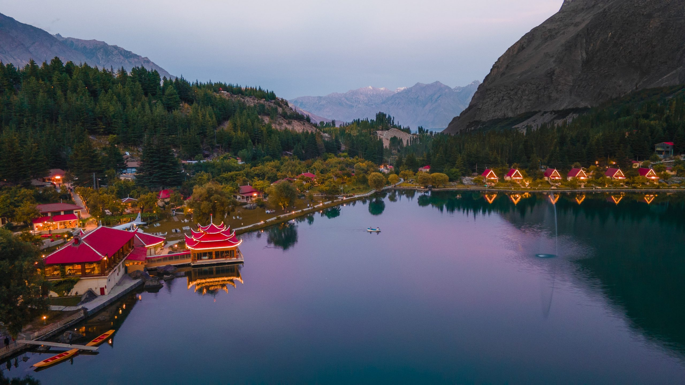

<div class="portfolio-single-load clearfix">
    <div class="custom-full-width-box">
        <div class="custom-container">
            <div class="custom-row align-items-center">
                <div class="custom-image-column">
                    
                </div>
                <div class="custom-text-column">
                    <h2 class="custom-heading">Skardu</h2>
                    <p class="custom-paragraph">
                        Nestled amidst the towering peaks of the Karakoram Range, Skardu is the gateway to some of the world's highest mountains, including K2 and Broad Peak. With a population of around 300,000 people, Skardu is a bustling town renowned for its breathtaking landscapes and vibrant culture. The town boasts ancient Buddhist stupas, historic forts, and serene lakes, offering endless opportunities for adventure and exploration. Visitors can trek through remote valleys, go mountaineering, or simply soak in the majestic beauty of Skardu's rugged terrain and snow-capped peaks.
                    </p>
                </div>
            </div>
        </div>
    </div><!-- .custom-full-width-box end -->

</div><!-- end single-project -->
